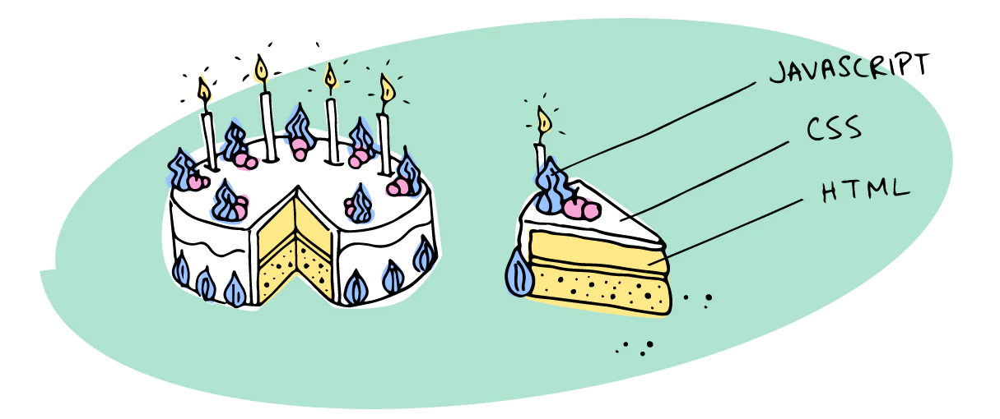
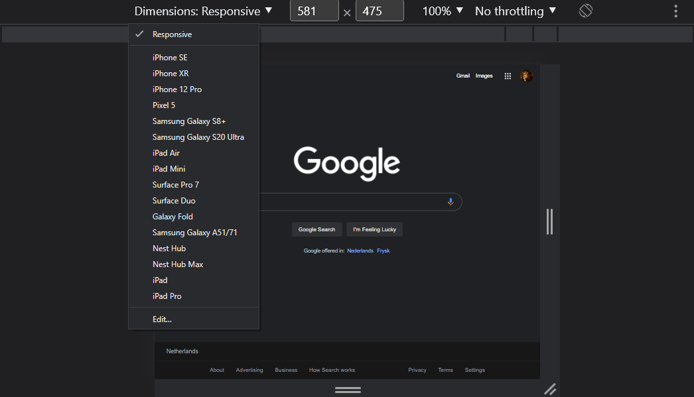

Metaphor Progressive Enhancement
Progressive Enhancement begint altijd met een goede basis(taart bodem) dat werkt voor alle aparaten en verschillenden gebruikers. Wanneer de basis staat van een goede website kan je de website uitbrijden door extra features(Taart kleur, vorm of smaak) toe te voegen om het gebruik van de website te verbeteren. Niet alle features van een website zijn voor iedereen toegankelijk voorbeelden kunnen zijn:
Wat is semantiek?
Semantiek bestaat niet alleen bij HTML maar is ook een begrip opzichzelf. Het gaat over de betekenis van elementen. Bijvoorbeeld bij de taal die wij spreken hebben wij ook semantiek. Semantiek in de taal gaat over de betekenis van woorden. Dat hebben wij dus ook bij HTML, de semantiek in HTML gaat over de betekenis van elementen. Daarom worden semantische elementen ook wel betekenisvolle elementen genoemd. Om semantisch HTML te kunnen schrijven moet je weten welke tags je kunt gebruiken. Om je website zo duidelijk mogelijk te maken gebruik je misschien al wat standaard tags zoals; h1, h2, h3, h4, h5 en h6. Maar het gaat veel verder dan die tags alleen. Sinds de opkomst van HTML5 zijn er heel veel nieuwe betekenisvolle elementen bijgekommen zoals bijvoorbeeld een om je headercontent te groeperen (daar kan bijvoorbeeld je in). In de tag kan je de main content van de pagina plaatsen en zo kan dit dan ook bij de tag. Zo zijn er veel meer zoals bijvoorbeeld een article, section, aside, etc... Meer semantische elementen kun je vinden op developer.mozilla.org
Waarvoor bestaat semantiek?
De reden waarom wij als developers rekening moeten houden met semantiek is omdat het internet voor iedereen toegankelijk moet zijn. Mensen met een tijdelijke of permanente beperking moeten ook de webpagina kunnen gebruiken. Maar denk bijvoorbeeld ook aan de SEO score van je website. Hoe hoger deze score is (die word gebaseerd op je semantiek en snelheid), hoe hoger deze in google komt te staan. Denk bijvoorbeeld een aan mensen die blind zijn, die moeten je website door kunnen bladeren met software die daarvoor bedoeld is. Deze software word gebouwd op het lezen van deze semantische tags. Zo kan een blind persoon door de content heen bladeren.
Door de content heen ‘tabben’
Je kan door de content van de website heen gaan zonder gebruik te maken van je muis of trackpad. Dat kan met je tab knop, maar waarom werkt dit? Of beter, hoe werkt dit? Met de tab knop op je toetsenbord kan je door interactieve elementen bladeren. Deze interactieve elementen bestaan uit onder anderen uit < a >, < button >, < details >, < input >, < select >, < textarea > etc... De reden waarom dit werkt is omdat deze elementen ingebouwde rollen hebben die anders moesten worden beheerd door ARIA.
Waarom een screenreader?
Een screenreader is een hulpmiddel die voornamelijk word gebruikt voor mensen die problemen hebben met zicht. Een screenreader zet tekst, knoppen, afbeeldingen en anderen elementen om in spraak of braille. Schermlezers kunnen worden aangepast op basis van de behoeften van de gebruiker. Zo kunnen zij bijvoorbeeld instellen dat zij over de pagina willen navigeren door middel van spraak of het gebruik van de tab key. Ook kunnen gebruikers bepalen hoeveel paginadetails ze willen ontvangen.
Kleurenblindheid
Voor kleurenblinden kunnen belangrijke kleuren ontbreken, zoals dat een button de kleur rood krijgt voor interactie. Door er rekening mee te houden is het gebruik van de site ook voor hun bereikbaar. Door dit te doen bereik je ook PDA's en 3G telefoons. De challenge is alleen wel welke kleuren je dan moet gebruiken. De beste kleuren die werken zijn de kleuren aan het einde van de kleuren spectrum, zwart en wit. Je kan dan met deze kleuren je hele site onderbouwen. Alleen je hele site in zwart wit bouwen is niet gewenst. Wat ook werkt zijn felle kleuren, soms hebben mensen namelijk moeite om verschil te zien tussen wat lichtere kleuren. Een andere oplossing is de optie te geven aan de gebruiker om de kleuren te veranderen op de site per soort van kleurenblindheid. Dit zorgt ervoor dat voor elk soort kleurenblinde het gebruik van de site prettig is. Het nadeel hiervan wel is dat de gebruiker eerst een actie moet ondernemen voordat de site is zoals gewenst. De andere optie is om bijvoorbeeld interacties aan te tonen door de tekst te underlinen. Dus i.p.v. te werken met kleuren werk je met de tekst veranderen of animaties. Je kan het zo gek maken als je wilt.
Text spacing dyslexie
Maar liefst 10% van de mensen hebben dyslexie. Het is dus verstandig om te zorgen dat de tekst ook makkelijk leesbaar is voor deze gebruikers. Anders krijgen ze een nare ervaring met het lezen of zoeken een andere site op. Het eerste wat kan helpen is een gebruikelijke font gebruiken. Dyslectische mensen zijn al gewend aan de gebruikelijke fonts, dus ze kunnen de vormen sneller herkennen. Denk aan fonts zoals Arial of Verdana. Een voor de hand liggende is de font groter maken. Uit onderzoek blijkt dat de beste font size 16-19px(12-14pt) is. Een andere manier om het te verbeteren is de ruimte tussen de woorden. Het helpt om de ruimte tussen de letters te verkleinen en de ruimte tussen de woorden te vergroten. Hierdoor kunnen ze woorden makkelijker bij elkaar grouperen. Italics of underline maken de woorden meer onleesbaar voor dyslectische mensen. Het is daarom handiger om gebruik te maken van bold. De lengte van de zin moet ook gelimiteerd zijn van 45-100 karakters. Langere secties en paragrafen zijn moeilijk te volgen. Dus mijn advies is om dit zo kort mogelijk te houden.
Progressive enhancement
Is een basisprincipe in webontwikkeling dat ervoor zorgt dat websites met moderne technieken voor iedereen blijft werken in de browsers die deze technieken niet ondersteund. Als bijvoorbeeld JavaScript uitvalt, afwijkende apparaten worden gebruikt, andere schermresoluties of een trage verbinding dan moet er een basic website overblijven zodat iedereen het kan gebruiken. Metafoor: Een slagroomtaart met kersen. Mocht de slagroom en de kersen wegvallen blijft er een basic moscovisch bodem over.
Trage verbinding
De meeste gebruikers verlaten een langzaam ladende website na 3 seconden. Het is daarom van belang dat de eerste laadsessie snel en betrouwbaar is bij trage verbindingen.
Hoe kun je dit aanpakken?
- - Je kunt het aantal verzoeken naar de server verminderen. De browser stuurt namelijk een verzoek (een HTTP-verzoek) naar de server die op zijn beurt de benodigde informatie ophaalt uit de PHP-bestanden. De webserver vertaalt deze PHP-bestanden in HTML-code die leesbaar is voor de browser. Elke afbeelding, animatie, functie genereert ook zo’n HTTP-verzoek. Hoe meer van deze verzoeken, hoe groter de datapakketten en dus hoe langer het duurt voordat de pagina is geladen.
- - Met de applicatie shell kan je de website op de schermen van de gebruikers laden. Deze bestaat uit minimale HTML, CSS en JavaScript. Zo is initiële HTML snel op het scherm te krijgen zonder een netwerk. Wanneer dit offline in de cache wordt opgeslagen zorgt dit ervoor dat bij herhaalde bezoeken de website meteen laadt omdat deze niet van het netwerk geladen hoeft te worden. Het cachen van de shell is met behulp van een service worker om de applicatie op te laten draaien. De dynamische content wordt geladen met JavaScript.
- - Met het juiste gebruik van media assets door bijvoorbeeld Scalable Vector Graphics (SVG) te gebruiken in plaats van andere bestanden. SVG’s zijn samengesteld uit lijnen, punten en vormen. Deze laden sneller dan andere bestanden zoals JPEG of PNG.
Inzoomen
Het inzoomen op een tablet is anders dan het inzoomen op een tablet. Dit kan problemen veroorzaken het slecht of soms helemaal niet werkt. Dit kan bijvoorbeeld komen doordat het reageert op basis van een mouse-over. Dit is niet mogelijk op een tablet, hierdoor werkt vaak zoom-functie niet of slecht.
Hoe kun je dit aanpakken?
- Het aanbieden van een multi-platform zoom-functionaliteit met behulp van de zoom-buttons of inzoomen door op een afbeelding te klikken. Dit is een functie die op een desktop als tablet werkt.
Responsive website
Wanneer je een website maakt voor het internet is een responsive website een belangerijk onderdeel om rekening mee te houden. In de loop van tijd zijn er verschillenden formaten van displays gemaakt zoals: mobiel, laptop ,tv, smartwatch of tablet. ALs een developer is het belangerijk dat de website die je maakt werkt voor alle verschillenden scherm formaten werkt.
Website responsive maken
- Pixels vervangen naar % vw vh em rem
- Mobile first (begin met het ontwerpen voor mobiel)
- Knoppen en links makelijk klikbaar maken voor mobiel ook met grote vingers
- Keuzes maken wat je wel en niet wil tonen op een klein scherm
- Gebruik media queries and breakpoints bij verschillden formaten
- Geeft de website een vieuwport

Responsive testen
Je kan alle verschillenden aparatenen kopen maar dit kan best duur worden daarom heeft google chrome in de development tools de mogelijkheid gegeven om het formaat van verschillenden apraten te testen. Je kan ook een Browser Stack kopen waarbij je alleen een url moet toevoegen en de website gaat de meeste voorkomende formaten tonen om te testen. Met Browser Stack kan je echte aparaten testen dus wannneer een mobiel bijvoorbeeld heel laag werkt kan je dit testen.
Website zonder javascript en css
Veel website gebruiken css en javascript om de website te maken. Maar somige mensen schakelen deze onderdelen uit of bepaalden browsers onderstuinen dit niet. Een goede website zou moeten kunnen werken met HTML als basis. Iets wat de gebruiker niet wil terug geven is een lege pagina omdat de content geladen moet worden met bijvoorbeeld javascript.

Wanneer je een website wil testen zonder javascipt volg de stappen in de link. https://developer.chrome.com/docs/devtools/javascript/disable/ Wanneer je de website zonder css wil testen volg deze stappen https://www.techwalla.com/articles/how-to-disable-css-in-chrome